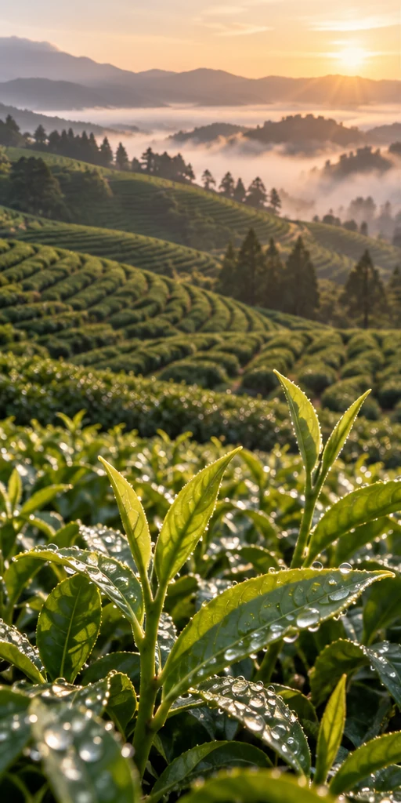

Olive green · The leaf
Green tea & matcha
A fresh leaf. Two distinct expressions.
Green tea and matcha begin with the tea plant, Camellia sinensis. For green tea, heat after picking limits oxidation; leaves are then shaped and dried. The result depends on cultivar, picking season and processing. A vivid leaf in the field does not tell the whole story of the finished tea.
Matcha is finely milled tea made from leaves grown with a shading stage and processed for grinding. Conventional matcha production uses tencha: steamed, dried leaves prepared without the rolling used for many other green teas, with stems and veins removed before milling. Not every green tea powder is matcha. Buyers should ask about shading, leaf preparation, milling and storage, then evaluate a sample in the intended drink or recipe.
Ask about cultivar, harvest, processing, particle size, sensory profile and light-resistant packaging.